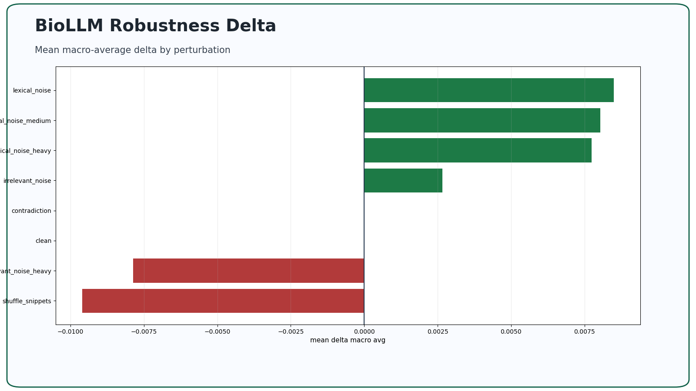
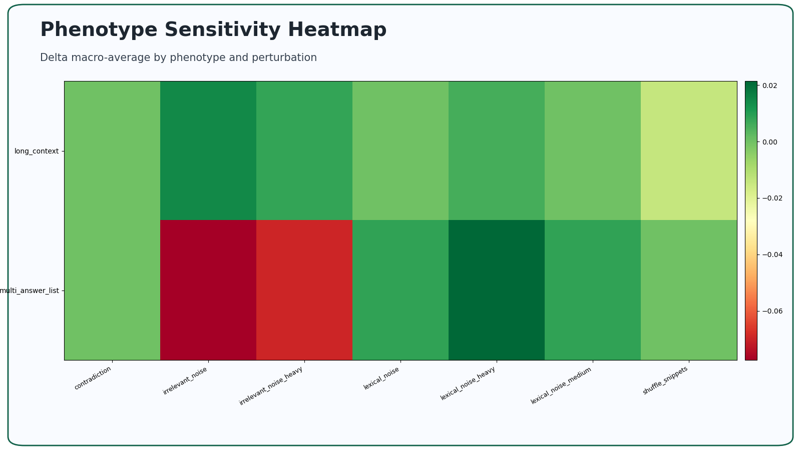
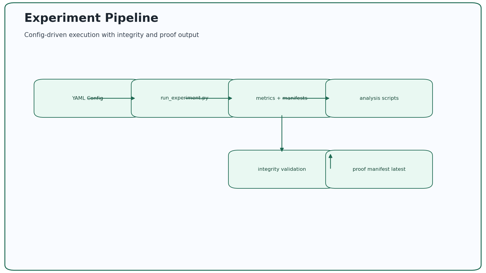

Problem
Benchmark scores alone do not explain model reliability under perturbation or across input phenotypes. Teams need repeatable experiments that quantify robustness and expose failure patterns.
Approach
- Config-driven experiment grid with deterministic seeds.
- Clean vs perturbed runs across lexical, contextual, and logical perturbations.
- Phenotype tagging and aggregation to surface segmented reliability effects.
- Scripted generation of report-ready tables and figures.
Proof Artifacts
Claim: canonical robustness outputs are reproducible and reviewable.
Command: python proof/validate_evidence_manifest.py
Artifacts:
- Canonical evidence manifest
- Phase 4 summary JSON
- Phase 4 findings
- Perturbation ranking table
- Integrity report
Signal: summary/findings/ranking artifacts resolve from canonical manifest and integrity report confirms reproducibility metadata.
Visual Proof



5-Minute Reviewer Path
- Open the What this proves for hiring section.
- Run the tiny validation path from README quickstart.
- Inspect Phase 4 analysis and table artifacts linked above.
Last verified: March 6, 2026
Thesis-Derived Lessons
- Type-specific evaluation is mandatory: thesis BioASQ results showed yes/no peak accuracy 64.0% (Macro-F1 0.5486), while factoid strict accuracy peaked at 15.8% and list performance remained near zero.
- Post-processing and output formatting are first-order system design concerns; semantically plausible answers still fail strict QA benchmarks without contract-compliant outputs.
- Closed-book generation limits factual grounding; future design should combine retrieval augmentation, structured biomedical knowledge, and stronger answer validation.
Master's Thesis (PDF) Results and Discussion Limitations and Future Work